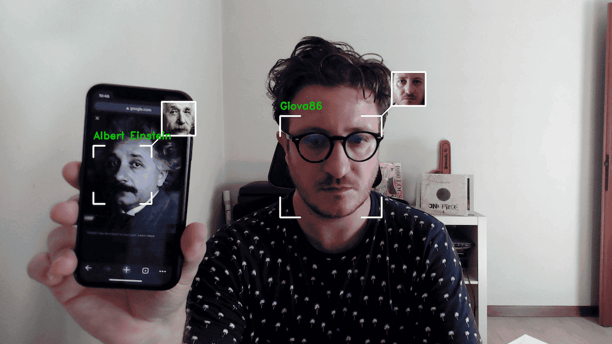

Real time face recognition. Identify people in real time providing extra information.
Face Recognition is a real-time computer vision tool that identifies people from a video feed and surfaces extra information about each recognized person.
Faces are detected and tracked frame by frame, then matched against known identities so the relevant information can be displayed alongside each face as it appears.
It relies on Mediapipe and OpenCV for face detection and image processing, with a Support Vector Machine classifier handling the recognition step.
Why/how it was used.
Why/how it was used.
Why/how it was used.
Why/how it was used.